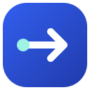
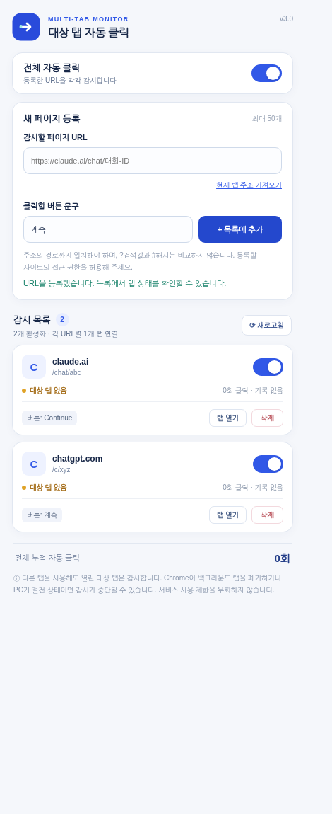

URL 목록 추가·삭제
원하는 채팅 페이지를 최대 50개까지 등록하고 필요 없을 때 바로 삭제합니다.

Target Tab Auto ClickerCHROME EXTENSION · V3.0감시할 페이지 URL을 목록에 등록하세요. 각 탭에서 버튼이 비활성 상태에서 활성화되면 자동 클릭합니다. 다른 탭을 쓰는 동안에도 각각 독립적으로 관리할 수 있습니다.

전체 버튼을 무작정 누르는 것이 아니라 등록한 페이지와 버튼 문구를 기준으로 동작합니다.
원하는 채팅 페이지를 최대 50개까지 등록하고 필요 없을 때 바로 삭제합니다.
각 URL과 버튼 문구를 따로 설정하고, 전체 감시와 개별 감시를 제어합니다.
Chrome이 대상 탭을 실행 중이면 다른 탭에서 작업하는 동안에도 상태 변화를 확인합니다.
등록한 페이지를 닫았다가 다시 열면 URL을 기준으로 대상 탭을 다시 찾습니다.
비활성화 상태와 대상 페이지를 검증합니다. 단순히 문구가 같다는 이유만으로 클릭하지 않도록 설계했습니다.
클릭 누적 횟수와 감시 상태를 팝업에서 확인합니다. 사용자 설정은 브라우저에 저장됩니다.
Chrome 웹 스토어 게시물이 아닌 오픈소스 확장프로그램으로, 개발자 모드에서 직접 로드합니다.
아래 설치용 ZIP을 다운로드하고 원하는 폴더에 압축을 해제합니다. 압축을 해제한 폴더는 삭제하지 마세요.
주소창에 chrome://extensions/를 입력합니다.
오른쪽 위 개발자 모드를 켠 다음 압축해제된 확장 프로그램을 로드합니다를 클릭합니다.
manifest.json이 들어 있는 폴더를 선택합니다. ZIP 파일 자체를 선택하지 않습니다.
확장프로그램 팝업에서 페이지 주소와 계속 / Continue 등을 입력하고, 사이트 권한 요청을 승인합니다.
각 주소의 상태를 확인하고 ON/OFF, 탭 이동 또는 삭제를 사용합니다.
등록한 탭이 열려 있고 Chrome이 스크립트를 계속 실행한다면 동작합니다. 다만 백그라운드 실행 지연, 탭 메모리 절약, 컴퓨터 절전으로 클릭이 늦어지거나 중단될 수 있습니다.
각 URL에 대해 한 개의 탭만 추적합니다. 같은 URL을 여러 탭에서 동시에 클릭하지 않습니다.
대상 URL과 버튼 문구를 등록할 수 있습니다. ChatGPT 안내 영역과 다른 사이트의 비활성화 상태를 서로 다른 조건으로 감시하지만, 실제 서비스 UI 변경에 따라 동작 여부가 달라질 수 있습니다.
확장프로그램 자체에는 별도 서버나 분석 API가 없습니다. 등록한 URL·설정·클릭 기록은 Chrome 로컬 저장소에 보관합니다. 공개 GitHub 저장소에 개인 대화 URL이나 인증 정보를 올리지는 마세요.
같은 확장프로그램 설치 폴더를 교체하고 새로고침하면 v2 설정을 v3 목록으로 자동 이전할 수 있도록 구성했습니다. 새로 별도 설치한 확장에는 기존 저장값이 자동으로 이전되지 않습니다.